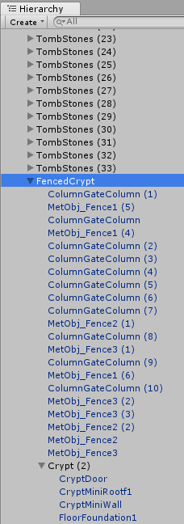

Future Enhancements
Game Objects
Each game object in the list below is a series of objects from the CemeteryPack asset package that is free from the Unity Asset Store. The parent objects are created using the GameObject – Create Empty option from the Unity menu. The child objects are then added to the parent object that was just created. One example is the FencedCrypt parent object holds numerous repeats of the ColumnGateColumn, MetObj_Fence1, MetObj_Fence2, MetObj_Fence3, and the Crypt objects. The Crypt object is a parent object to the child objects CryptDoor, CryptMiniRootf1, CryptMiniWall, and FloorFoundation1 objects. (See picture)
The placement of these objects is at the discretion of the terrain design manager (Currently Caitlin).
- List of Parent Game Objects:
-
- FencedTombstones
- Crypt
- Tombstones
- FencedCrypt
- Tree